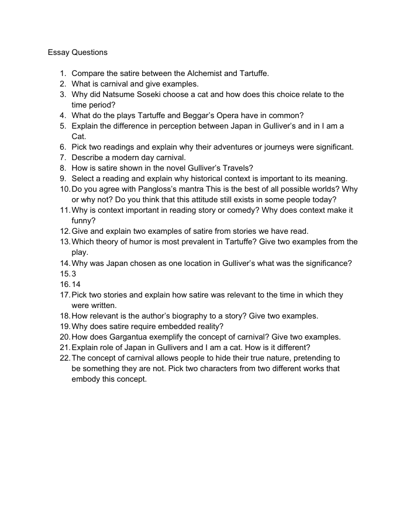

Schedule
August 28, 2012
LEcture: INTRo -- The study of humor
CLICKER REGISTRATION OPEN
Sign Up for Group project click here
PART ONE - PHilosophy of Humor
Week 1 Introduction
August 30, 2012
ORIGINS Of Comedy
Read: Plato, Aristotle, and Hobbes
Begin Lysistrata read lines 1-615
if you haven’t already Sign Up for Group project click here
week 2 Whether to laugh or cry
September 4, 2012
Theories of Humor - 1. Superiority Theory
The Schadenfreude of (Studying ETHNIC) HUMOR
You say, “Eiron and Alazon” and I say, “Schlemiel and the Schlimazel”
Read:
Continue Lysistrata lines 615-1007
September 6, 2012
BONUS OPPORTUNITY: Bring a Joke 1
Finish Lysistrata lines 1007-1321
if you haven’t already Sign Up for Group project click here
Week 3 Comic relief
September 11, 2012
Theories of Humor - 2. Relief Theory
The Gelotology From Jokes v. Life
Read: Descartes, Freud, Holland “The Comic”
Theory 1 quiz
September 13, 2012
Read:
Joseph Heller, Catch-22 excerpts 1 (Read) and 2 (Watch)
WOODY ALLEN, “KUGELMAS EPISODE,” “No Kaddish for Weinstein,”
Sherman Alexie, "The Lone Ranger and Tonto Fistfight in Heaven," “This is What It Means to Say Phoenix, Arizona"
Bring a Joke 2
GROUP THREE PRESENTATION WEBSITE
Last week to sign up for a group project click here
Big fat bonus opportunity!!! Read for the CATCH-22 Marathon!!! 10 Points for all Readers. 5 Points for all who go and write up a humorous account of their experience listening (1 Page)
Week 4 HUmor WTF!
September 18, 2012
Theories of Humor - 3. Incongruity Theory
Read: Bergson, Kant, Shopenhauer, Holland “Stimuli”
WOODY ALLEN, “The Metterling Lists”
LECTURE CLIPS FROM SHAOLIN SOCCER, Tampopo
Theory 2 Quiz
September 20, 2012
Sexual Humor / Political Humor
Read: Decameron selections
GROUP FOUR PRESENTATION WEBSITE
Bring a Joke 3
CLICKER REGISTRATION CLOSED
Week 5 Sublime Humor
September 25, 2012
Theories of Humor - 4. Aesthetics of Humor
Read: Kierkegard, Holland “Conditions”
THeory 3 quiz
GrouP five SlIDES
[student work removed]
September 27, 2012
[email redacted]
MID-TERM
Part two - Literary Humor - Comedic Genres, Form
Week 6 Comedy and the structures of jokes
October 2, 2012
Read: Ben Jonson, The ALCHEMIST
Paper 1 due -
use one or more theories of humor to argue that your favorite Comedy film is not mean, vicious, or demeaning.
October 4, 2012
Read: Ben Jonson, The ALCHEMIST
[student work removed]
Week 7 The Humor of Politics
October 9, 2012
Read: Tartuffe
October 11, 2012
Read: More Tartuffe
[student work removed]Group seven Slides
[student work removed]
WEEK 8 Politics of Humor
October 16, 2012
Politics: from the gullotine to Cartoons and back
Read: Beggars opera
October 18, 2012
Read: beggars opera
Group Eight Project
WEEK 9 The Importance of (Being) Set up
October 23, 2012
Sit Coms
Read: Rabelais and Bahktin
October 25, 2012
Read: Rabelais and Bahktin
Part Three - What is funny? Content V. Context
WEEK 10 Allegory in Other worlds
October 30, 2012
Satire with SWIFT v. Voltaire
Read: GUlliver’s Travels Part III and IV only
Group 10 Project
November 1, 2012
VOLTAIRE V. Twain
Read: Selection from Voltaire’s Candide Chapters 1, 5, 6 and from Twain’s Innocents Abroad Chapters 1,2,7
[student work removed] Group ten Slides
Week 11 The question of a non-Western Humor
November 6, 2012
Theory QUiz four on humor Aesthetics and Carnival
Read: SOseki, I am a Cat Book 1
November 8, 2012
Read: SOseki, I am a Cat Book 1, and 2
Week 12 The role of the real world in the fantastic
November 13, 2012
Read: SOseki, I am a Cat Book 2
November 15, 2012
Mid Term 2
Click Below for a list of possible essay questions that you generated in class. At least two will be on the exam.

Read: SOseki, I am a Cat Book 3
Week 13 THANKSGIVING
Part four - Contemporary, Popular, Mass Media Humor
Week 14 Pie in face: of slap and stick
November 27, 2012
People’S Choice film
Paper 2 due -
Choose one work of literature that we have read from a culture that is not your own. Research the context to the production of the story itself (information about the author or early readers), the time period in which it was produced, or the culture from which it came. answer the Following question: how do the details you have learned that exist outside of the words on the page help you understand those words?
November 29, 2012
Jackie CHan’s Dream: Keaton v. Bruce Lee
Week 15 MadCap Humor -- Algonquin Rountable
December 4, 2012
Read: SJ Perelman, Thurber, WATCH Marx BROS Duck Soup
December 6, 2012
REALITY HUMOR: MOCKUMENTARY, FAKE NEWS, AND SACHA BARON COHEN v. Stephen Colbert
WEEK 16 presentations of final Papers
December 11, 2012
December 13, 2012
MONDAY OF EXAM WEEK
FINAL PAPER DUE
compare two or more literary works from different cultures and contexts. What is similar about them? What is different? With history, language, and culture being so different across time and geography, What allows you to compare them? Theory of humor? Genre? or something else? Why is it important to compare? Answer the question: Is comparative literature a form of humor? Draw on your texts, outside research, and the theories of humor we have discussed to formulate your argument.
The syllabus is in flux. Check here for most recent updates. Any printout is likely already out of date.
Updated Thursday, December 20, 2012
Lit Hum schedule
Fall
2012